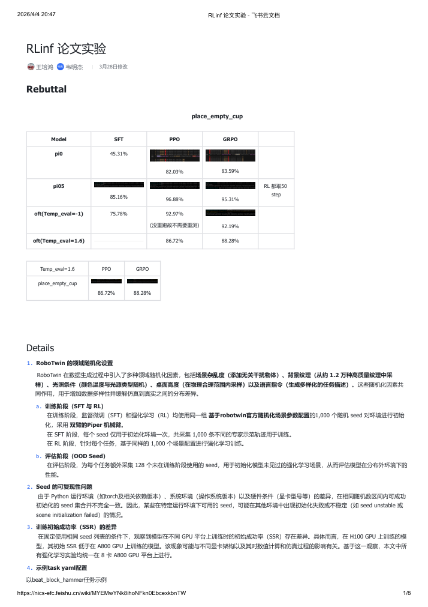

先锁定实验契约，再谈 SSR 增益
这组结果只有在训练、评估与硬件条件同时对齐时，才具备可比性。
- 训练对齐
SFT 与 RL 共用 1,000 个随机场景 seed，并采用双臂 Piper 机械臂。
- OOD 口径
额外使用 128 个未见 seed，检验随机化场景下的外推，而不是固定布局上的记忆。
- 复现边界
领域随机化与运行环境会改变可用 seed 和初始 SSR；因此统一锁定 8 卡 A800。
WHAT THIS CHANGES后续结论的有效范围是“固定 RoboTwin 配置、seed、评估口径和 8 卡 A800 条件下”，不是跨硬件、跨环境的普遍保证。
